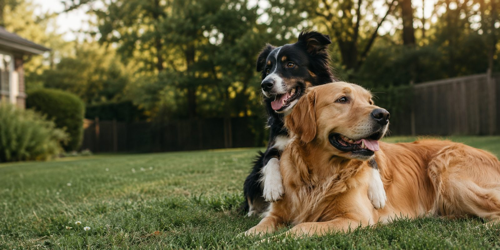

Straight answers to every dog question, from first-night puppy panic to senior-dog care. No filler, no fearmongering, no upsells. Just what works.

Everything you need to raise a healthy, happy, well-adjusted best friend.
From sit to stay to stop eating my shoes.
What's actually in that bag? We break it down.
Know the signs before it becomes an emergency.
Yes, you do need to brush their teeth.
A bored dog is a destructive dog. Let's fix that.
Puppies, adults, seniors - every phase covered.
Fresh tips, tricks, and tales.
Get the best dog advice delivered straight to your inbox every week.
No spam. Unsubscribe anytime. We're dog people, not monsters.
We go beyond the basics so you don't have to.
Vetted links, trusted trainers, and products we've tested ourselves. Affiliate links marked with ⭐
New guides like this one, straight to your inbox.